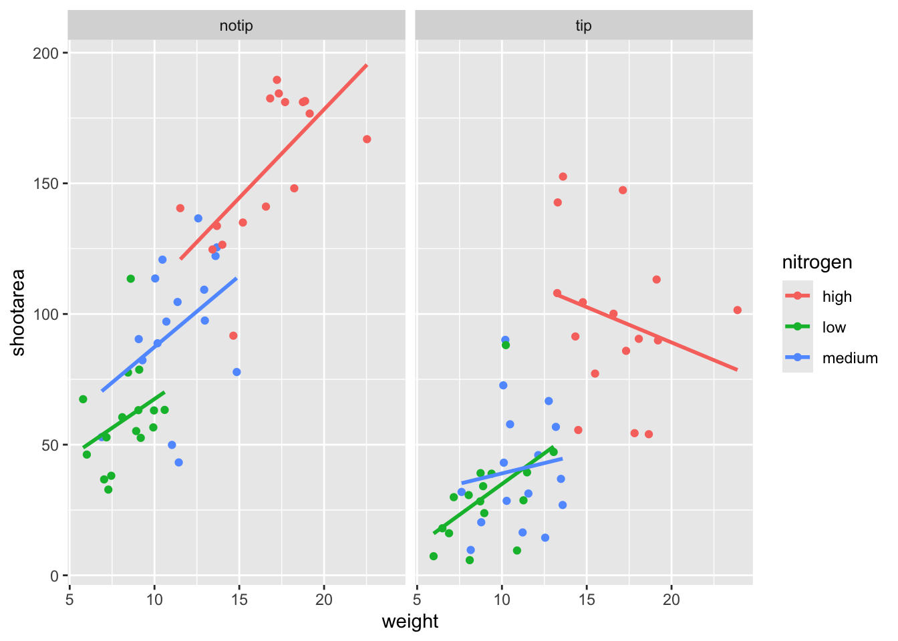

4.2 The start of the end
The first step in producing a ggplot is the easiest! We just need to install and then load the package. Use the skills you learnt in Chapter 1.5 to install and load the package. Note that although I (and pretty much everyone) refer to the package as ggplot, it’s proper name is ggplot2.
With that taken care of, let’s make our first ggplot!
4.2.1 The purest of ggplots
During the R course this book is based on, the students are asked at one point to shout out all of the functions they have either learnt in the course or heard of/used before. At this point in the course we have not touched on ggplot, but one year a student shouted out ggplot(). When asked what the ggplot() function does, they said that it makes a ggplot. This makes complete and utter sense. So let’s make a ggplot now:

And here we have it. A fully formed, perfect ggplot. We may have a small issue though. Some puritan data visualisers/plotists/figurines make the claim that figures should include some form of information beyond a light grey background. As loathe as I am to agree with purists, I will do so here. We really should include some data. To do so, we need some data.
We’ll keep using the flower dataset that you used in the earlier chapters. Let’s have a quick reminder of what the data looked like.
str(flower)
#> 'data.frame': 96 obs. of 8 variables:
#> $ treat : Factor w/ 2 levels "notip","tip": 2 2 2 2 2 2 2 2 2 2 ...
#> $ nitrogen : Factor w/ 3 levels "high","low","medium": 3 3 3 3 3 3 3 3 3 3 ...
#> $ block : int 1 1 1 1 1 1 1 1 2 2 ...
#> $ height : num 7.5 10.7 11.2 10.4 10.4 9.8 6.9 9.4 10.4 12.3 ...
#> $ weight : num 7.62 12.14 12.76 8.78 13.58 ...
#> $ leafarea : num 11.7 14.1 7.1 11.9 14.5 12.2 13.2 14 10.5 16.1 ...
#> $ shootarea: num 31.9 46 66.7 20.3 26.9 72.7 43.1 28.5 57.8 36.9 ...
#> $ flowers : int 1 10 10 1 4 9 7 6 5 8 ...We know from the “final figure” that we want shootarea on the y axis and weight on the x axis. To do so in ggplot we need to make use of the aes() function and also fulfill the data = argument. aes is short of aesthetics, and it’s the function we use to specify what we want displayed in the figure. Let’s try it now:
# Including aesthetics for x and y axess as well as speficying the dataset
ggplot(aes(x = weight, y = shootarea), data = flower) 
That’s already much better. At least it’s no longer a blank grey canvas. We’ve now told ggplot what we want as our x and y axes as well as where to find that data. But what’s missing here is where we tell ggplot how to display that data. This is now the time to introduce you to “geoms” or geometric objects. Geoms are the way that ggplot displays information. For instance geom_point() tells ggplot that you want the information to be displayed as points (making scatterplot possible). Given that the “final figure” uses points, this is clearly the appropriate geom to use here.
Before we can do that, we need to talk about the coding structure used by ggplot. The analogy that I and many others use is to say that making a figure in ggplot is much like painting. What we’ve done in the above code is making our “canvas”. Now we are going to add sequential layers to that painting, increasing the complexity and detail over time. Each time we want to include a new layer we need to include a + at the end of the proceeding layer to tell R and ggplot that there are additional layers coming. Let’s add (+) a new geom now:
ggplot(aes(x = weight, y = shootarea), data = flower) +
# Adding a geom to display data
geom_point() 
If what we wanted was a quick and dirty figure to get a grasp of the trend in the data we can stop here. We can see that shootarea looks like it’s increasing with weight in a linear fashion. So long as this answers a question, we have a figure is perfectly suited for personal use. Though for showing to other people we might want something a bit more developed. If we glance back to our “final figure” we can see that we have lines representing different nitrogen concentrations. We can include lines using a geom. If you have a quick look through the available geoms here, you might think that geom_line() would be appropriate. Let’s try it.
ggplot(aes(x = weight, y = shootarea), data = flower) +
geom_point() +
# Adding geom_line
geom_line()
Not quite what we were going for. The problem that we have is that geom_line() is actually just playing join-the-dots. The geom we actually want to use is called geom_smooth(). We can fix that very easily just by changing “line” to “smooth”.
ggplot(aes(x = weight, y = shootarea), data = flower) +
geom_point() +
# Changing to geom_smooth
geom_smooth()
#> `geom_smooth()` using method = 'loess' and formula 'y ~ x'
Better, but still not what we wanted. The challenge here is that drawing a line is actually somewhat complicated. The way this line was drawn was using a method called “LOESS” which gives something very close to a moving average; useful in some cases, less so in others [ggplot will use LOESS as default when you have < 1000 observations]. Instead of a wiggly line, we want a nice simple straight line to be drawn using a method called “lm” or (linear model - see Chapter XXX for more details). Try looking at the help file, using ?geom_smooth, to see what other options are available for the method = argument. While we’re at it, let’s get rid of the confidence interval ribbon around the line. I prefer to do this as I think it’s clearer to the audience that this isn’t a properly analysed line and to treat it as a visual aid only. We can do this at the same time using the se = argument.
Let’s update the code to use a linear model without confidence intervals.
ggplot(aes(x = weight, y = shootarea), data = flower) +
geom_point() +
# Specifying the method as lm and se to false
geom_smooth(method = "lm", se = FALSE)
That’s exactly what we wanted, though it’s still not matching the “final figure”. We need geom_smooth() to draw lines for each level of nitrogen concentration. Getting ggplot to do that is pretty straightforward. We can use the colour = within aes() to use tell ggplot to draw a different coloured line depending on nitrogen concentration.
ggplot(aes(x = weight, y = shootarea), data = flower) +
geom_point() +
# Including colour argument in aes()
geom_smooth(aes(colour = nitrogen), method = "lm", se = FALSE)
We’re getting closer, but this is actually a good time to talk about where to include information - whether to include it in a geom or in ggplot(). When we include information such as data = and aes() in ggplot() we are setting those as the default, universal values which all subsequent geoms use. We can easily move the information around and get exactly the same figure.
ggplot() +
# Moved aes() and data into geoms
geom_point(aes(x = weight, y = shootarea), data = flower) +
geom_smooth(aes(x = weight, y = shootarea, colour = nitrogen), data = flower, method = "lm", se = FALSE)
Doing so we get exactly the same figure. This ability to move information around is surprisingly powerful. It can allow different geoms to display different (albeit similar) information (see more on this later).
For this worked example, we’ll move the information back to the universal ggplot() so that we can have the points coloured as well.
# Moved colour = nitrogen into the universal ggplot()
ggplot(aes(x = weight, y = shootarea, colour = nitrogen), data = flower) +
geom_point() +
geom_smooth(method = "lm", se = FALSE)
This figure is now what I would consider to be the typical ggplot figure. We have specified some information, and with only a few lines of code, yet we have something that looks quite attractive. While it’s not yet the “final figure” it is perfectly fit for purpose. You have now created you’re first “pure” ggplot.
Once you’ve seen this figure you will see version similar to it more and more often. But we’re aiming for something a bit more developed.
4.2.2 Wrapping grids
Having made our “pure” ggplot, the next big obstacle we’re going to tackle is the grid like layout of the “final figure”. ggplot includes options for determining the “facets” of a figure. We’ll start off by using facet_wrap() to show what this can do. For facet_wrap() to work we need to specify a formula for how the facets will be defined (see ?facet_wrap for more details and also for how to define facets without using a formula).
ggplot(aes(x = weight, y = shootarea, colour = nitrogen), data = flower) +
geom_point() +
geom_smooth(method = "lm", se = FALSE) +
# Including a facet
facet_wrap(~ treat)
That’s pretty good, though we are missing the rows showing different blocks. Given that facet_wrap can use a formula, maybe we could simply include block in the formula? Remember that block refers to the region in the greenhouse where the plants were grown (it’s not something special to ggplot in this case). Let’s try it and see what happens.
ggplot(aes(x = weight, y = shootarea, colour = nitrogen), data = flower) +
geom_point() +
geom_smooth(method = "lm", se = FALSE) +
# Adding "block" to formula
facet_wrap(~ treat + block)
Side quest: Try messing around with the formula to see what happens. Try putting ~ treat + flowers or even ~ treat + block + flowers. The important thing to remember here is that facet_wrap will create a new figure for each value in a variable. So when you wrap using a continuous variable like flowers, it makes a plot for every number of flowers counted. Be aware of what it is you are doing, but never be scared to experiment. Mistakes are easily fixed in R - it’s not like a point and click figure maker where you’d have to go through all those clicks to get the same figure again. Made a mistake? Easy, change it back and rerun the code (see Chapter XXX for version control which takes this to the next level).
This figure is almost exactly what we want. Almost. But not exactly. In this case we actually want to be using facet_grid(), an alternative to facet_wrap() which should put us back on track to make the “final figure”.
ggplot(aes(x = weight, y = shootarea, colour = nitrogen), data = flower) +
geom_point() +
geom_smooth(method = "lm", se = FALSE) +
# Changing to facet_grid
facet_grid(~ treat + block)
That’s disappointing. It’s pretty much the same as we had before and is no closer to the “final figure”. What we need to do to fix it is to rearrange our formula so that we say that block in relation to treatment (not in combination to).
ggplot(aes(x = weight, y = shootarea, colour = nitrogen), data = flower) +
geom_point() +
geom_smooth(method = "lm", se = FALSE) +
# Rearranging formula
facet_grid(block ~ treat)
4.2.3 Plotting multiple ggplots
And we’re there. Although the styling is not the same as the “final figure” this is showing the exact same information. We can plot them side-by-side to see how they compare. To do so we will use an additional package called patchwork. Go ahead and install and load patchwork (see Chapter 1.5 if you need a refresher for how to do this).
We’ll need to go back to our previous code and do something clever. We can assign figures a name and then use that to call the figure whenever we run the name. For instance, I have assigned the “final figure” the name…. final_figure (I’m not a clever person).

We’ll do the same with the figure we’ve created together:
# Naming our figure object
rbook_figure <- ggplot(aes(x = weight, y = shootarea, colour = nitrogen), data = flower) +
geom_point() +
geom_smooth(method = "lm", se = FALSE) +
facet_grid(block ~ treat)Now when the code is run, the figure won’t be presented. This will only happen when we run the name of the figure as code. We can do this while also showing patchwork.
An old headache when using ggplot was that it could be difficult to create a nested figure (different plots all part of the same figure). Patchwork resolves this problem very elegantly and simply. We have two immediate and simple options with patchwork; figures on top of each other (operationalised with /) and figures side-by-side (operationalised with either + or |). Let’s try.
Giving us a nested side-by-side figure.
Side quest: Try to create a stacked version of the above figure.
We can also assign nested patchwork figures a name and use this in turn to create labels for individuals figures.
4.2.4 Make it your own
While we have a great figure already that shows the data we want it to show, it uses all of the default stylistic options. While the default options are arguably good, they may not be what we want ourselves. Maybe we’re going to use this figure in a presentation and we want to make sure someone in the very back of the room can easily read the figure. Maybe we want to use our own colour scheme. Maybe we want to change the grey background to a nice bright neon pink. In essence, maybe we want to decide things for ourselves. This next section will go through how to customise the appearance of our figure.
Let’s start with the easier stuff, namely changing the size of the points using the size = argument. Before we do, have a think about where we’d include the argument? Should it be in ggplot() or geom_point()?
ggplot(aes(x = weight, y = shootarea, colour = nitrogen), data = flower) +
# Including size argument to change the size of the points
geom_point(size = 2) +
geom_smooth(method = "lm", se = FALSE) +
facet_grid(block ~ treat)
Straightforward, we changed the size from the default of size = 1 to a value that we decide for ourselves. What happens if you included size in ggplot?
If we wanted to change the shape of the points to reflect nitrogen concentrations, how do you think we’d do that? We’d use the shape = argument, but this time we need to include an aes() within geom_point() because we want to include specific data to be displayed on the figure.
ggplot(aes(x = weight, y = shootarea, colour = nitrogen), data = flower) +
# Including shape argument to change the shape of the points
geom_point(aes(shape = nitrogen), size = 2) +
geom_smooth(method = "lm", se = FALSE) +
facet_grid(block ~ treat)
Try including shape = nitrogen without also including aes() and see what happens.
We’re getting closer and closer to the “final figure”. Another thing we may want to be able to do is change the transparency of the points. While it’s not actually that crucial here, changing the transparency of points is really valuable when you have lots of data and big clusters of points can be hidden. Doing this is, again, surprisingly easy, accomplished using the alpha = argument. Again, ask yourself where you think the alpha = argument should be included.
ggplot(aes(x = weight, y = shootarea, colour = nitrogen), data = flower) +
# Including alpha argument to change the transparency of the points
geom_point(aes(shape = nitrogen), size = 2, alpha = 0.6) +
geom_smooth(method = "lm", se = FALSE) +
facet_grid(block ~ treat)
We can also include defined labels for the x and y axis. There are a couple of ways to do this, but my preferred way is the same as used in base R figures; using xlab() and ylab(). As we are going to be creating new layers and adding them onto the figure, we’ll need to convey this to ggplot using +.
ggplot(aes(x = weight, y = shootarea, colour = nitrogen), data = flower) +
geom_point(aes(shape = nitrogen), size = 2, alpha = 0.6) +
geom_smooth(method = "lm", se = FALSE) +
facet_grid(block ~ treat) +
# Adding layers for x and y labels
xlab("Weight of flower (g)") +
ylab("Area of shoot (cm^2)")
Great. Just as we wanted, though getting the “(cm^2)” to show the square as a superscript would be ideal. Here, we’re going to use a function which is part of base R called bquote().
ggplot(aes(x = weight, y = shootarea, colour = nitrogen), data = flower) +
geom_point(aes(shape = nitrogen), size = 2, alpha = 0.6) +
geom_smooth(method = "lm", se = FALSE) +
facet_grid(block ~ treat) +
xlab("Weight of flower (g)") +
# Using bquote to get mathematically correct formatting
ylab(bquote("Area of shoot"~(cm^2)))
4.2.5 Setting the theme
ggplot contains so called themes. Themes control the base style of a ggplot. Let’s play around with themes using some skills we’ve already learnt; assigning plots to objects and plotting multiple ggplots in a single figure to explore some theme options. We assign themes by creating a new layer with theme_X().
classic <- ggplot(aes(x = weight, y = shootarea, colour = nitrogen), data = flower) +
geom_point(aes(shape = nitrogen), size = 2, alpha = 0.6) +
geom_smooth(method = "lm", se = FALSE) +
facet_grid(block ~ treat) +
xlab("Weight of flower (g)") +
ylab(bquote("Area of shoot"~(cm^2))) +
# Classic theme
theme_classic()
bw <- ggplot(aes(x = weight, y = shootarea, colour = nitrogen), data = flower) +
geom_point(aes(shape = nitrogen), size = 2, alpha = 0.6) +
geom_smooth(method = "lm", se = FALSE) +
facet_grid(block ~ treat) +
xlab("Weight of flower (g)") +
ylab(bquote("Area of shoot"~(cm^2))) +
# Black and white theme
theme_bw()
minimal <- ggplot(aes(x = weight, y = shootarea, colour = nitrogen), data = flower) +
geom_point(aes(shape = nitrogen), size = 2, alpha = 0.6) +
geom_smooth(method = "lm", se = FALSE) +
facet_grid(block ~ treat) +
xlab("Weight of flower (g)") +
ylab(bquote("Area of shoot"~(cm^2))) +
# Minimal theme
theme_minimal()
light <- ggplot(aes(x = weight, y = shootarea, colour = nitrogen), data = flower) +
geom_point(aes(shape = nitrogen), size = 2, alpha = 0.6) +
geom_smooth(method = "lm", se = FALSE) +
facet_grid(block ~ treat) +
xlab("Weight of flower (g)") +
ylab(bquote("Area of shoot"~(cm^2))) +
# Light theme
theme_light()
#(classic | bw) /
# (minimal | light)In terms of finding a theme that most closely matches our “final figure”, it’s probably going to be theme_classic(). There are additional themes available to you, and even more available online. GGthemes is a package you can download to get even more theme options. The BBC even have their own ggplot theme called “BBplot” (though I personally don’t like it too much for scientific figures). Indeed, you can even make your own theme which is what we’ll work on next. To begin with, we’ll have a look to see how theme_classic() was coded. We can do that easily enough by just writing the function name without the paranethesis (brackets).
theme_classic
#> function (base_size = 11, base_family = "", base_line_size = base_size/22,
#> base_rect_size = base_size/22)
#> {
#> theme_bw(base_size = base_size, base_family = base_family,
#> base_line_size = base_line_size, base_rect_size = base_rect_size) %+replace%
#> theme(panel.border = element_blank(), panel.grid.major = element_blank(),
#> panel.grid.minor = element_blank(), axis.line = element_line(colour = "black",
#> size = rel(1)), legend.key = element_blank(),
#> strip.background = element_rect(fill = "white", colour = "black",
#> size = rel(2)), complete = TRUE)
#> }
#> <bytecode: 0x000000001931e8c0>
#> <environment: namespace:ggplot2>Let’s use this code as the basis for our own theme and modify it according to our needs. We’ll call the theme, theme_rbook. Not all of the options will immediately make sense, but don’t worry about this too much for now. Just know that the settings we’re putting in place are:
- Font size for axis titles = 20
- Font size for x axis text = 10
- Font size for y axis text = 10
- Font for caption = 10 and italics
- Background colour = white
- Background border = black
- Axis lines = black
- Strip colour (for facets) = black
- Strip text colour (for facets) = white
- Legend box colours = blank
This is by no means an exhaustive list of features you can specify in your own theme, but this will get you started. Of course, there is no need to use a personalised theme as the pre-built options are perfectly suitable.
theme_rbook <- function(base_size = 20, base_family = "", base_line_size = base_size/22, base_rect_size = base_size/22) {
theme(
axis.title = element_text(size = 20),
axis.text.x = element_text(size = 10),
axis.text.y = element_text(size = 10),
plot.caption = element_text(size = 10, face = "italic"),
panel.background = element_rect(fill="white"),
panel.border = element_rect(colour = "black", fill=NA, size=0.5),
axis.line = element_line(size = 1, colour = "black"),
strip.background =element_rect(fill = "black"),
strip.text = element_text(colour = "white"),
legend.key=element_blank()
)
}theme_rbook() is now available for us to use just like any other theme. Let’s try remaking our figure using our new theme.
ggplot(aes(x = weight, y = shootarea, colour = nitrogen), data = flower) +
geom_point(aes(shape = nitrogen), size = 2, alpha = 0.6) +
geom_smooth(method = "lm", se = FALSE) +
facet_grid(block ~ treat) +
xlab("Weight of flower (g)") +
ylab(bquote("Area of shoot"~(cm^2))) +
# Updated theme to our theme_rbook
theme_rbook()